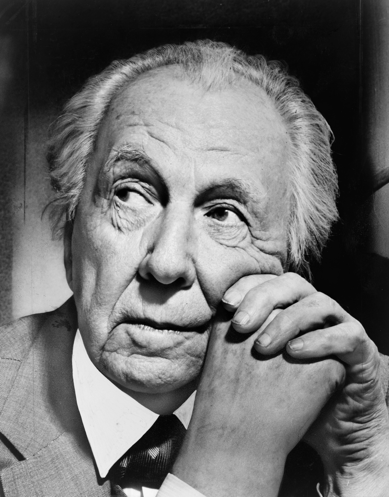

Frank Lloyd Wright was an American architect and a pioneer of organic architecture, which emphasizes harmony between human habitation and the natural world. His designs often feature open floor plans, natural materials, and integration with the landscape. He developed the Prairie School style and introduced Usonian homes as an affordable yet innovative housing solution.


One of Frank Lloyd Wright’s most celebrated works, Fallingwater (1935) is a masterpiece of organic architecture, seamlessly integrating nature with design. Built over a waterfall in Pennsylvania, the house features cantilevered terraces that extend over the rushing water, blurring the boundary between indoors and outdoors. Wright used local stone, open floor plans, and expansive glass windows to create a structure that harmonizes with its surroundings, making it an enduring icon of 20th-century architecture.

Located in New York City, the Solomon R. Guggenheim Museum (1959) is a revolutionary example of museum design. Wright’s spiraling, continuous ramp allows visitors to experience art in a flowing, organic space rather than in traditional, compartmentalized galleries. The building’s circular form, curved concrete structure, and skylit rotunda challenge conventional museum architecture, making it one of the most recognizable and influential cultural landmarks in the world.